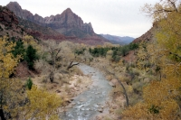
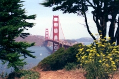
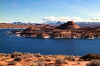
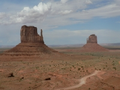
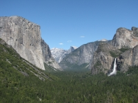
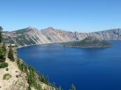

Zion National Park
|
1990 Autumn Vacation
 FLL→TUC FLL→TUC
 AZ→UT→AZ AZ→UT→AZ
TUC→FLL
November 9-24
145 photos (34MB)
Highlights: Saguaro, Apache Trail, Petrified Forest, Canyon de Chelley, Monument Valley, Natural Bridges, Arches, Canyonlands, Capitol Reef, Bryce Canyon, Zion, Las Vegas
Camera: Nikon N2020 (B)
|

Golden Gate Bridge
|
1992 Business Trip
FLL→SFO
CA→NV→CA
SFO→FLL
August 21-28
52 photos (12MB)
Highlights: San Francisco, Lake Tahoe, Virginia City
Camera: Nikon N2020 (B)
|

Palace of Fine Arts
|
1993 Spring Vacation
FLL→SFO
CA
SFO→FLL
May 13-27
234 photos (59MB)
Highlights: San Francisco, Muir Woods, Pacific Coast Highway, Yosemite, Kings Canyon, Sequoia
Camera: Nikon N2020 (B)
|

Guadalupe Mountains National Park
|
1993 Autumn Vacation
PBI→TUS
AZ→TX→AZ
TUS→PBI
October 23-November 7
112 photos (30MB)
Highlights: White Sands, Guadalupe Mountains, Carlsbad Caverns, Sunset Crater, Sedona, Montezuma Castle, Organ Pipe, Tucson, Saguaro, Sabino Canyon
Camera: Nikon N2020 (B)
|

Lake Powell
|
1996-97 Winter Vacation
AUS→PHX
AZ→CA→AZ
PHX→AUS
December 21-January 5
78 photos (19MB)
Highlights: Sedona, Lake Powell, Rainbow Bridge, Canyon de Chelley, Rose Parade, California Missions, Joshua Tree
Camera: Nikon N2020 (B)
|

Saguaro National Park
|
1998 Autumn Vacation
TX→AZ→TX
November 4-13
44 photos (11MB)
Highlights: Chiricahua, Saguaro, Coronado Trail, Red Rock, El Malpais, Petroglyph
Camera: Nikon N2020 (B)
|

Arches National Park
|
2001 Spring Vacation
TX→UT→TX
May 19-June 2
92 photos (24MB)
Highlights: Arches, Dead Horse Point, Colorado
Camera: Nikon N2020 (B)
|

Monument Valley Navajo Tribal Park
|
2007 Summer Vacation
TX→UT→TX
June 10-July 1
328 photos (101MB)
Highlights: Monument Valley, Valley of the Gods, Arches, Canyonlands, Goblin Valley, Capitol Reef, Bryce Canyon, Cedar Breaks, Grand Canyon, Zion, Saguaro
Camera: Panasonic DMC-FZ5 (E)
|

Yosemite National Park
|
2010 Summer Vacation I
TX→CA→TX
May 29-June 13
261 photos (75MB)
Highlights: White Sands, Joshua Tree, Sequoia, Kings Canyon, Yosemite, Tucson, Caverns of Sonora
Camera: Canon SX10 IS (G)
|

Lone Cypress
|
2013 Summer Vacation
TX→CA→TX
June 5-29
366 photos (103MB)
Highlights: Yosemite, San Francisco, 17-Mile Drive, Sonora Pass, Devils Postpile, Mono Lake, Bodie, Death Valley, Sedona, Tucson, Kitt Peak
Cameras: Panasonic DMC-FZ5 (H), Canon SX40 HS (I), Canon SX10 IS (K)
|

Sedona
|
2014-15 Winter Break
TX→AZ→TX
December 27-January 5
99 photos (25MB)
Highlights: Tucson, Prescott, Jerome, Sedona, Mt. Lemmon
Cameras: Canon SX40 HS (I), Panasonic DMC-FZ5 (L)
|

Glacier Bay National Park
|
2016 Summer Vacation I
AUS→SFO→YVR
 YVR→Seward YVR→Seward  →Denali →ANC →Denali →ANC
ANC→SEA→AUS
June 11-22
209 photos (50MB)
Highlights: Vancouver, Inside Passage, Ketchikan, Misty Fjords, Juneau, Skagway, Glacier Bay, Denali
Cameras: Canon SX10 IS (M), Canon SX60 HS (N)
|

Crater Lake National Park
|
2021 Summer Vacation
TX→WA→TX
June 26-July 24
542 photos (152MB)
Highlights: John Day Fossil Beds, Cascades Highway, Seattle, Olympic, Mount Rainier, Columbia River Gorge, Crater Lake, Lava Beds, Lassen Volcanic, Las Vegas
Cameras: Canon SX10 IS (M), Canon SX60 HS (N), Canon SX720 HS (P)
|
 Compilations
Compilations
|

Golden Gate Bridge
|
Dave's Faves
1990-2021
305 photos (83MB)
|

Capitol Reef National Park
|
Utah's Mighty 5
November 1990
May 2001
June 14-24 & 26-27, 2007
339 photos (97MB)
|

Yosemite National Park
|
Yosemite National Park
May 1993
June 3-5 & 7-9, 2010
June 9-15, 2013
399 photos (113MB)
|
|
NOTES
|
- Digital pictures (cameras E-O) are original material, no editing has taken place except for resizing and cropping; film pictures (camera B) are original material scanned from color negatives, editing has taken place to remove imperfections, resize and crop
- Pictures are displayed in chronological order
- Pictures are displayed at the rate of 20 per minute
|
|
|